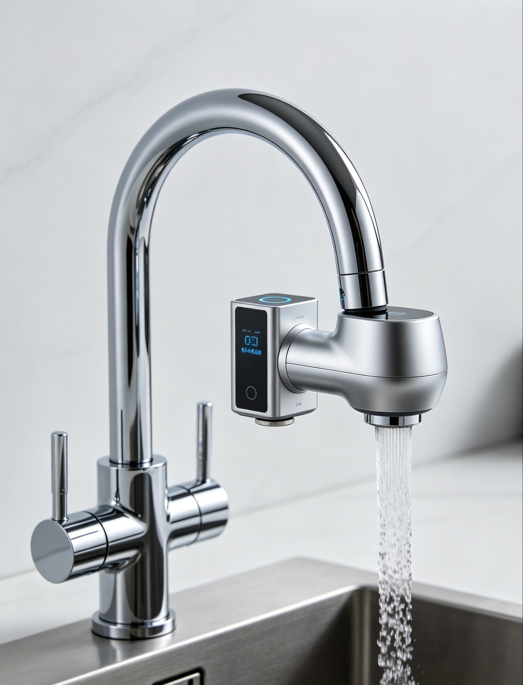
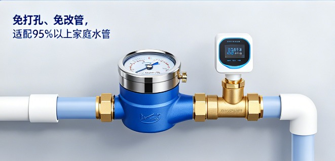

背景 · 为什么是这个题Context · Why this problem
市场在增长，但“最后一米”长期被忽视A growing market, a neglected “last meter”
家庭用水的水质问题（余氯、硬度、重金属、浊度…）长期“看不见、看不懂、不会处理”。从应用层看，用户每天喝水、洗漱、洗澡，却完全不了解水质是否安全，余氯、重金属、杂质等隐患长期被忽视。同时，市面上设备要么太大、要么太贵、要么只能固定使用，没有能满足 “家庭全屋水质监测” 和 “外出便携使用”需求的设备。水质检测仍然没有下沉到家庭应用的层面，水质监测的“最后一米”长期被忽视。Household water issues — residual chlorine, hardness, heavy metals, turbidity — have long been invisible, opaque, and hard to act on. Every day people drink, wash, and bathe without knowing whether their water is safe; hazards like residual chlorine, heavy metals, and impurities go unnoticed. Existing devices, meanwhile, are too big, too expensive, or fixed in place — none satisfies the need for both whole-home water monitoring and portable, on-the-go use.
用户装了净水器之后，并不知道水质到底好不好，滤芯什么时候换、出水是否真的达标，全靠“感觉”，同时，市面上设备要么太大、要么太贵、要么只能固定使用，没有能满足 “家庭全屋水质监测” 和 “外出便携使用”需求的设备。水质检测仍然没有下沉到家庭应用的层面——这就是“最后一米”。After installing a purifier, users still can't tell whether their water is actually safe, when to change the filter, or whether the output really meets the standard — it all comes down to “feeling.” Existing devices, meanwhile, are too big, too expensive, or fixed in place; none satisfies the need for both whole-home water monitoring and portable, on-the-go use. Water-quality testing has yet to reach the household — and that's the “last meter.”
问题 · 三个痛点Problem · Three pain points
先看得见，再看得懂，最后要能处理See it, understand it, act on it
“水有没有余氯、干不干净，我完全不知道。”“Is there chlorine? Is it clean? I have no idea.”
“TDS 是 50 还是 500，对我皮肤有什么影响？”“TDS 50 or 500 — what does it mean for my skin?”
“知道水硬，但我该换净水器还是装软水机？”“Water's hard — do I change the purifier or add a softener?”
用户 · 为谁做Users · Who it's for
四类场景，一个共同诉求Four personas, one shared need
需求假设，需一手问卷验证（占位数据，详见“调研”页）。Assumptions to be validated by primary research (see Research page).
自住房家庭Homeowners
全屋用水、母婴/老人同住 → 全屋水质总控、滤芯寿命管理。Whole-house water, elderly & kids at home → whole-home control & filter-life management.
租房 / 宿舍人群Renters / dorm
不确定水管是否老旧 → 便携、免安装、即装即用。Uncertain pipes → portable, no-install, plug-and-use.
母婴家庭Families with infants
泡奶、宝宝洗澡 → 对余氯/重金属异常敏感。Formula & baby baths → highly sensitive to chlorine/heavy metals.
出差旅行人群Travelers
酒店、外地水质不确定 → 便携检测、即时反馈。Unfamiliar water on the road → portable, instant feedback.
方案 · 从检测到健康闭环Solution · From detection to a health loop
三位一体：监测终端 、 云平台 、 智能 AppThree in one: sensors + cloud + app
双形态终端（初版设计渲染图）Two hardware forms (initial renders)


应用场景 · 核心流程Scenario flows
双形态终端分别在家庭与外出两个场景落地“监测—分析—预警—处理”闭环，异常时触发“提醒 + 自动解决 + 健康建议”三路联动。The dual-form hardware lands the monitor–analyze–alert–resolve loop on two scenarios; any anomaly fires “alert + auto-fix + health advice” together.
三个差异化Three differentiators
看得见See
便携款 + 旗舰家用款双形态终端，覆盖全屋 、 外出多场景，数据 24h 实时上传、手机随时看。Portable + flagship home sensors cover whole-house & on-the-go; 24/7 real-time data.
看得懂Understand
把指标翻译成皮肤/头发/身体健康影响，给出分级预警（饮用水高风险 vs 生活用水提示）。Translate metrics into health impact with tiered alerts.
做得了Act
健康画像 → 个性化方案 + 设备自动联动，形成闭环。Profile → personalized plan + auto-linkage, closing the loop.
竞品五维矩阵Five-dimension competitive matrix
现有品类各有短板：专业仪贵、有专业门槛；TDS 笔只测单一指标、无解读；品牌 App 绑定自家净水器、不通用；饮水 App 只记录喝水、不检测。家庭全屋监测与外出便携使用之间，存在明确空缺——这正是本产品双形态终端的切入点。Each existing category falls short: lab instruments are costly and expert-only; TDS pens measure one metric with no interpretation; brand apps are locked to their own purifier; hydration apps track drinking but don't detect. Between whole-home monitoring and portable on-the-go use lies a clear gap — exactly where our dual-form hardware enters.
| 维度Dimension | 专业仪Lab | TDS 笔TDS pen | 品牌 AppBrand app | 饮水 AppHydration | 本产品Ours |
|---|---|---|---|---|---|
| 检测能力Detection | ●●●●● | ●●○○○ | ●●●○○ | ●○○○○ | ●●●●○ |
| 健康解读Interpret | ●○○○○ | ●○○○○ | ●●○○○ | ●●●○○ | ●●●●● |
| 个性化方案Personal plan | ●○○○○ | ●○○○○ | ●●○○○ | ●●○○○ | ●●●●● |
| 设备联动Linkage | ●○○○○ | ●○○○○ | ●●●○○ | ●○○○○ | ●●●●○ |
| 家庭可及性Accessibility | ●○○○○ | ●●●●● | ●●●●○ | ●●●●● | ●●●●○ |
已实现 vs 规划中（诚实边界）Shipped vs planned (honest boundary)
| 项Item | 状态Status | 说明Note |
|---|---|---|
| 移动应用（软著 1）Mobile app (SC #1) | 已实现Shipped | 纯前端 SPA，11 功能模块，24 项冒烟测试通过Vanilla SPA, 11 modules, 24 smoke tests pass |
| 物联网云平台（软著 2）IoT cloud (SC #2) | 已实现Shipped | Node.js REST 、 MQTT Broker 、 阈值/健康引擎 + AES 加密Node REST + MQTT broker + engines + AES |
| 硬件终端（便携款 + 旗舰家用款）Hardware (portable + flagship home) | 规划中Planned | 跨工科方向，当前为设计/选型阶段Cross-discipline; design/selection stage |
| 机器学习 / 真实数据ML / real data | 规划中Planned | 当前健康分析为规则引擎；ML 与真实数据为科研路线 BCurrent health engine is rule-based; ML + real data = research path B |
Demo · 在线体验Demo · Try it live
直接点两下，比任何文字都有说服力Click around — more persuasive than words
家庭水质健康智能管理移动应用（软著 1）Water Health App (Software Copyright #1)
在新窗口打开 ↗Open in new tab ↗注册任意账号即可体验（本地 Mock 数据，无需后端）。 Register any account to explore (local mock data, no backend needed).
指标 · 怎么衡量做对了Metrics · How we know it works
北极星 + 过程指标North star + process metrics
| 指标Metric | 定义Definition | 对应目标Goal |
|---|---|---|
| 北极星 · WAANorth star · WAA | 周内“主动查看 ≥1 且 采纳建议 ≥1”去重用户数Weekly unique users who view ≥1 & adopt ≥1 advice | 同时衡量“看得见”和“用得上”Both visibility & action |
| 激活Activation | 设备激活率 · 健康画像完成率Device activation · profile completion | 硬件→软件、个性化前提HW→SW, personalization precondition |
| 核心价值Core value | 健康方案采纳率 · 预警响应率 · 联动触发率Advice adoption · alert response · linkage trigger | 翻译层是否有效、闭环是否闭合Does the loop close? |
| 质量Quality | 预警准确率（真异常 / 全部报警）Alert precision | 信任基础Trust |
验证 · 做到哪一步了Validation · where we are
逻辑已验证，用户与数据待补Logic validated; users & data pending
| 阶段Stage | 状态Status | 内容Detail |
|---|---|---|
| 逻辑验证Logic | 已完成Done | 前端 24 项冒烟测试 + 后端核心逻辑测试通过24 smoke tests + backend logic pass |
| 可用性验证Usability | 进行中Ongoing | 部署 demo、找 5–10 名目标用户试用、记录反馈Deploy demo, 5–10 target users, log feedback |
| 真实数据验证Real data | 未开始Not started | 接入公开数据集 / 实地采样Public datasets / field sampling |
| 商业化验证Commercial | 未开始Not started | 一手问卷 、 试点验证付费意愿Primary research + pilot for willingness to pay |
复盘 · 三个关键决策Reflection · Three key decisions
产品判断，而不是堆功能Product judgment over feature-stacking
① 打“翻译层”，不拼精度① Compete on interpretation, not precision
市场不缺更准的检测仪、更便宜的 TDS 笔——缺的是家庭与便携场景下，把数据翻译成健康行动的那一层。The market already has precise instruments and cheap TDS pens; it lacks a layer that turns readings into health actions in home and portable settings.
② 数据源解耦，硬件不卡壳② Decouple data, don't block on hardware
Mock/HTTP/MQTT 三实现可切换，硬件没落地软件也能完整交付迭代。Swappable Mock/HTTP/MQTT sources let the software ship before hardware.
③ 先规则引擎，再 ML/LLM 增强③ Rule engine first, ML/LLM later
MVP 用规则快速验证价值，后续升级 LLM 、 文献知识库（RAG）。Validate value with rules, then upgrade to LLM + RAG.
下一步Next steps
- 补真实用户调研数据（问卷 + 访谈）Gather real user research (survey + interviews)
- demo 上线 + 小规模试用复盘Deploy demo + small-scale trial & retro
- LLM 健康建议 POC（对接科研路线 B）LLM health-advice POC (research path B)